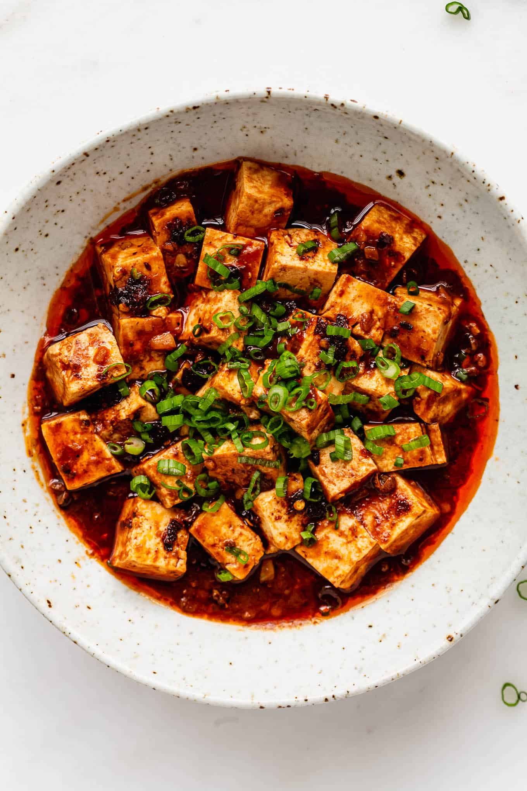

Mapo Tofu

Mapo tofu is a popular Chinese dish made with soft tofu, minced meat, spicy chili bean paste,
and Sichuan peppercorns, known for its numbing and spicy flavor.
Ingredients
- Soft tofu (卤水豆腐/嫩豆腐), 500g. Ok, ready for something fun? You know how in the West, tofus are categorized
according to firmness, ranging from extra soft to extra firm? Yeah… China doesn’t have the same
categorization system. Instead, we’ve got three primary styles: gypsum tofu (石膏豆腐, which I’m 98% sure is the
same as silken tofu in the West), tender brined tofu (嫩卤水豆腐, which I’m 98% sure is the same as ‘soft tofu’
in the West), and pressed brined tofu (老卤水豆腐, which I’m 98% sure is the same as ‘firm tofu’ in the West).
Gypsum tofu tends to be the go-to tofu in Cantonese cuisine (which is why it’s also sometimes called
‘southern tofu’), tender brined tofu is very popular in central China (e.g. Hakka and Sichuan cuisines), and
pressed brined tofu is often the standard in the North. I’m simplifying a bit here, and there’s obviously
also a mountain of other products… but the point is this: we’re using the ‘tender brined tofu’ for this
dish. What this means for you is that the right tofu for this dish is likely “soft tofu”, or perhaps
“medium”.
- Minced beef (牛肉末), 80g. Notice the quantity. I’ve noticed a lot of people in the West that seem to love to
turn their Mapo Tofu into a damn hamburger helper meal. You can ultimately add however the hell much beef
you want (I ain’t judging), but note that more beef will mean that you’ll need more oil if you want to get a
nice result (more on that in the process below).
- Peanut oil -or- Caiziyou, virgin rapeseed oil -or- Indian mustard seed oil, 5 tbsp. Ok, so if you’ve
followed these recipes at all, you might’ve heard me wax poetic about caiziyou. It’s a virgin rapeseed oil
that’s kind of foundational in Sichuan cooking – it’s not quite analogous to olive oil in Mediterranean
cuisines, but that’s the closest comparable I could think of. Unfortunately, it’s banned in the United
States due to [ed: very questionable] research put out in the 1960s that said that erucic acid was bad for
you, which lead to our current flavorless Canola. Indian mustard seed oil is very similar in taste, also
high in erucic acid, but gets around the ban by labelling it as ‘for topical use only’ (wink, wink). It’s a
brilliant sub, but just be aware that mustard seed oil must be heat up til smoke point before using. If all
else fails, just use peanut oil.
- Sichuan peppercorns (花椒), 1 tbsp. To be toasted and ground into a powder. Foundational flavor here, there’s
no sub.
- Sichuan Chili Bean Paste, i.e. Pixian Doubanjiang (郫县豆瓣酱), 3 tbsp. Another fundamental component – besides
flavor, this is what actually makes Mapo Tofu… red. Now, it should be said that some brands of Chili Bean
Paste kind of suck (cough Lee Kum Kee cough), so try to find a nice one if you can. There’s a brand called
Juan Cheng Pai which is one of the best mass produced ones that exports to the West (can be found online),
so pick that up if you can.
- Chili flakes (辣椒粉), 2 tbsp. I can already see some of you squirming at the delightfully vague ‘chili
flakes’. For reference, our chili flakes are from the Erjingtiao (‘two vixen chili’) chili – closely related
to cayenne, ~20k SVU. If my memory’s serving me right, I believe chili flakes in the West usually come from
cayenne… but just in case I’m totally off my rocker, you could also blitz a bit of dried cayenne or arbols.
- Douchi, black fermented beans, (豆豉) 1 tbsp. Roughly chopped. If you can’t find these, just skip them. I know
some people like to use ‘black bean sauce’, but we… feel pretty strongly on the topic (just taste a bottle
side by side next to some actual douchi if you don’t believe me).
- Aromatics: 4 cloves garlic, 2 inches ginger. Minced.
- Stock (毛汤), 1 cup -or 1 cup water mixed with 1 tsp stock concentrate (鸡汁/瑶柱汁) -or- 1 cup water. We we using
a simple homestyle stock. No need to get too fancy here.
- Green garlic (蒜苗) -or- scallions, 1-2 stalks. Chopped into 1 inch sections.
- Seasoning for the Mapo Tofu: 1 tbsp light soy sauce (生抽), 1 tbsp liaojiu a.k.a. Shaoxing wine (料酒/绍酒), ¼ tsp
MSG (味精), ¼ tsp white pepper powder (白胡椒粉), ½ tbsp toasted sesame oil (麻油).
- Slurry of 1 tbsp cornstarch (生粉) mixed with ~1-2 tbsp water. Be sure to check out the process below on
adding the slurry. You’ll likely only need about half of this.
Process
- Slice the tofu into one inch cubes. Slice your tofu in half horizontally. Then, slice down to get one inch
strips, and finally cut in the other direction to get one inch cubes.
- Get a small pot of water up to a boil, and add in ½ tsp of salt. Add enough water so that it’d be able to
submerge the tofu. ~3 inches, but it depends on the size of your pot. This step isn’t a science, promise.
- Lower to a heavy simmer, carefully add in tofu cubes. Simmer for ~3 minutes. Leave tofu cubes in the hot
water until you’re ready to cook. Unlike gypsum tofu, brined tofu has a slight grassy taste. This blanch in
salt water will remove that taste, and also help firm the tofu up a touch. Leave the tofu in the hot water
until you’re good to use it.
- Toast and grind the Sichuan peppercorns. Add your Sichuan peppercorns to a wok and toast for ~1-2 minutes
over a medium low flame. You’ll know you’re done once you can see little oil splotches on the side of your
wok, like this (sorry, I know that pic’s a bit dark). Then transfer over to a mortar – or whatever your
spice grinding method of choice is – and get into a nice powder.
- Slice the green garlic, mince the garlic, mince the ginger, roughly chop the douchi fermented beans, mince
the chili bean paste. I know mincing the chili bean paste might seem like a weird step, but the good ones
are pretty chunky. Chomping down on a big salty bean isn’t ideal.
- Make the Mapo Tofu. Begin by stir-frying. As always, first longyau: get your wok piping hot, shut off the
heat, add in the oil, and give it a swirl to get a nice non-stick surface. Heat on medium high now, heat the
oil up until bubbles start to form around a pair of chopsticks (~170C), then:
- Drop in the beef mince. Fry for ~four minutes. You’re not looking to get your beef mince to ‘done’: you’re
looking to get that mince PAST done. You want the beef to become crispy and release the oil. See this
picture? Not there yet. This is what you’re looking for. The oil should be clear again.
- Shut off the heat. Add in the chili bean paste, begin to fry. Make sure it’s not burning, then swap the
flame back to medium-low.
- Fry the chili bean paste for ~90 seconds to color and flavor the oil. This step is called ‘making the red
oil’ (做出红油), and it’s probably the most critical part of the whole operation. Optimal temperature to fry
chili bean paste in oil is 100-110C. If you’ve ever made some Pixian Douban-based dishes and have struggled
with color, it’s because you’re either doing this step at too high of a heat, or not long enough.
- Minced douchi, in. Quick mix.
- Aromatics, in. Quick mix.
- Chili flakes, in. Fry everything together for ~one minute until it’s all a nice even paste.
- Add in the stock.
- Drain the tofu cubes, then toss them in. Carefully arrange, make sure not to break the tofu.
- Swap flame to medium high, get up to heavy simmer.
- Simmer everything for ~7 minutes, or until reduced by about one third. While simmering, carefully push the
tofu back and forth to prevent sticking.
- Add in the seasoning.
- Add in HALF the slurry. Allow to thicken. If thickened to your liking, proceed to the next step. If not, add
in the remainder of the slurry. Reducing’s not a science, so doing it this way helps ensure that you’re not
over thickening.
- Add in the green garlic. Mix and cook for ~30 seconds (~15 seconds if using scallions).
- Sprinkle over the Sichuan peppercorn powder. Heat off, out.
Now, when you first take the Mapo Tofu out, you might think to yourself ‘ah man, this isn’t as red and sexy as I
was anticipating’. Be patient, in 5-10 minutes, the oil will float to the top and you’ll get that classic Mapo
Tofu look.